55 tons · Inner Sphere · 24 variants · 2465 to 3144

Maxwell put the first one together in 2465, and it was a heavy. Sixty tons of primitive components, a prototype particle cannon, a five-tube missile rack, and three jump jets, which were still a new idea and not one everybody trusted. Earthwerks swallowed Maxwell, and the machine I actually get asked to keep running left the line in 2492. Five tons lighter. A Fusigon PPC, in a gun the pilot can dump if it takes a hit, on the right arm. A Delta Dart ten-rack in a drum over the right shoulder. Five Rawlings 55 jump jets in the rear torso, good for about a hundred and fifty metres. They were still calling it a heavy. Then the weight classes got redrawn, it became a medium, and the work changed with the paperwork, from walking into a fight to standing off and shooting.
What you've got on that one is an Earthwerks GRF frame, a CoreTek 275, Starshield A armour, a Neil 6000 comms set and an Octagon Tartrac tracker. The Fusigon and the Delta Dart are both on the right, and so are the missiles, two tons of them under the drum. That's the only thing on the machine that can explode. The left arm is a fist. I tell pilots to keep that side towards whoever is shooting at them, because if the right torso goes, the arm goes with it, and then I'm looking at a Griffin with nothing left that shoots. Later refits started pulling the CoreTek out to hang a bigger rack on. Different machine to work on. Usually a shorter career.
If you're choosing one, the Succession Wars machine is the GRF-1N, and it's the one I still sign out without an argument. Once the Clans turned up, the GRF-3M started coming out with an XL engine, and I want the pilot told what one torso hit does to it before it leaves the bay. The GRF-6S is the Phoenix rebuild. Light engine. I can put one of those back together after a bad day. The GRF-3N went back to a proper fusion plant, which is what I want when the recovery crew is a day out. The Griffin C is for people who've stopped asking what it costs.
In Classic the PPC reaches 18 hexes and the LRM 10 reaches 21, and the missiles will fire indirect if somebody else can see the target. Five jump jets put fifty-five tons on the hill everyone else is walking around. The sheet also gives it Battlefists on both arms, Rugged, and Ubiquitous. Parts are everywhere, which is why these things stay in service, and once a fight gets inside the PPC's minimum of three hexes the fists are better than a medium's usually are. On the Alpha Strike card the indirect fire is the IF1, and the damage prints 1/2/2. Same machine. The card is just a shorter way of saying it doesn't do much up close.
The thing the record sheet doesn't shout about is that the jump, the PPC and the missiles are not meant to happen on the same turn. I've had more 1Ns come back for heat than for armour.
Twelve single heat sinks. A PPC is 10 heat. An LRM 10 is 4. Jumping costs 1 heat per hex, minimum 3, and it replaces the walking heat rather than stacking on top of it. The columns below are the change from whatever you started the turn on. Heat does not go below zero.
| What you did | Heat in | Sinks | Change |
|---|---|---|---|
| Stand still, both guns | 14 | 12 | +2 |
| Walk, both guns | 15 | 12 | +3 |
| Run, both guns | 16 | 12 | +4 |
| Jump 5, LRM only | 9 | 12 | −3 |
| Jump 5, PPC only | 15 | 12 | +3 |
| Jump 5, both guns | 19 | 12 | +7 |
Pilots will tell you the Griffin runs hot. The 1N doesn't. They do. Jump five and fire the LRM: that's 5 heat for the jump and 4 for the missiles, against 12 sinks, so you come off the turn cooler than you went in. Jump and fire the PPC and you're up 3, which a pilot can live with. Jump and fire both and you're up 7. From a cold start that's a movement penalty and not yet a gunnery one. Do it again and you finish on 14: +2 to hit, a worse movement penalty, and a shutdown roll you avoid on a 4.
Standing still and firing both isn't free either. It's +2 a turn. You get away with it twice. The third time leaves you on 6, and the movement penalty is waiting the next time you want to leave the ridge. What actually works is dull, and I have said it to a lot of pilots. Both guns when you're cold and planted. PPC on its own once you're warm. LRM on its own when you had to jump. Inside three hexes, stop firing the PPC and punch. Double heat sinks on the later machines buy a lot of this back. An ER PPC is still 15 heat before you've moved.
People put a Griffin, a Shadow Hawk and a Wolverine in the same lance and talk like they bought three of the same medium. They didn't. This is the 3025 game, Classic, where you can actually see what's in each torso.
The SHD-2H carries an AC/5, a medium laser, an LRM 5 and an SRM 2, on three jump jets. BV 1064. The ammunition is split across all three torsos, and I've seen what that does to a machine that was otherwise fine. The Wolverine WVR-6R carries an AC/5, an SRM 6 and a medium laser, on five jump jets. BV 1101. It can stand in the middle of a fight. The 1N is the Fusigon and the Delta Dart, also on five jets, BV 1272. That's 208 more than the Hawk and 171 more than the Wolverine, and most of it is the particle cannon. It still reaches at eighteen hexes, and it doesn't cook off if the magazine goes. You're not paying the Wolverine's price for the jets. You've already got the same five. I just wouldn't want to be the one in the cockpit once they get in close. The Delta Dart is inside its minimum from six hexes in, the Fusigon joins it at three, and from there it's the fists. Good fists. The Wolverine still has the SRM 6.
On the Alpha Strike cards that same gap prints as 2/2/1 for the Hawk and the Wolverine, and 1/2/2 for the Griffin. Useful shorthand. It isn't the record sheet. If what you wanted was jump and missiles, a Dervish DV-6M brings two LRM 10s, two SRM 2s and two medium lasers, jump five, BV 1146, and it never had a PPC to get the pilot in trouble. A Vindicator VND-1R is the same idea on 45 tons: PPC, LRM 5, a medium and a small, movement 4/6/4, BV 1024. It gets to the hill later. If I already know which ridge the pilot is standing on, I sign out the Griffin. If the map's a mess and the fight could land anywhere, I sign out the Wolverine.
The GRF-1A is the 2465 machine, Maxwell's, and the only reason to roll one out is a fight early enough that a prototype is the point. Sixty tons, three jump jets, a prototype particle cannon that builds heat just sitting there, a five-tube rack, eleven single sinks, fourteen and a half tons of primitive armour. The original brief was close assault, plugging the gap between a Mackie and the little recon machines. It did that until heavier machines showed up that were actually built to walk into people. Earthwerks had absorbed Maxwell by then and kept the line open because pilots liked the thing. Liking it is not the same as it being good. I wouldn't put a 1A on the field next to a 1N.
The 2492 machine is the one that lasted. Fifty-five tons, the Fusigon, the Delta Dart, five Rawlings jets, and a top speed around eighty-six kilometres an hour. Still being called a heavy when it left the line. Once the weight classes were standardised it was a medium, and the job on the order sheet changed with the class: long-range fire support for a medium lance. The 1A is in the table so the early date is honest. If somebody orders "a Griffin" they do not mean the 1A.
After that it stopped being one factory's machine. Earthwerks had it on Keystone. Defiance picked it up on Hesperus II, Kallon on Talon, Brigadier on Oliver, Norse on Marduk, later under the Victory name, and Vandenberg on Illiushin. The Capellans never tooled up. They bought a limited run off the Taurians, which is what you do when the design has already walked off and you still need the parts. In the Fourth Succession War the Combine took Marduk and the Lyrans took Oliver, and whatever variant was on the line went with the building. After that, "it's a Kurita Griffin" stopped telling me whose lance I was looking at.
The Royal is the GRF-2N, 2751, and people assume a Star League Griffin is a better 1N. It isn't. They pulled the LRM 10, hung two SRM 6s and an ER PPC, and fitted ECM, CASE, double heat sinks, ferro-fibrous and endo steel. In Classic that's a machine that wants the fight inside medium range, where the SRMs work and the ER PPC still reaches. The Alpha Strike card prints 3/3/1. Long range got worse. You're paying 334 BV over a 1N for that, plus the ECM. Production died with the Star League. ComStar kept some, the Clans parked some in solahma units, and the New Dallas Memory Core put it back on a line in the Jihad. A 3025 list doesn't have one. A Jihad list might, and it still doesn't play like a 1N.
The 1S is Defiance on Hesperus II from 2857, and for a long stretch it was the only Griffin still being built. PPC out. A large laser and two mediums in, the rack cut to an LRM 5, four extra heat sinks so it can shoot those lasers and jump in the same turn. The 1N cannot do that. They weren't frightened of the PPC's heat. The 1N had nothing for you inside three hexes except fists, and the Succession Wars were full of people who got inside three hexes. In Classic it's a medium-range brawler. The Alpha Strike card is 2/2/0, so don't take it to do the 1N's job. A Lyran player in 3025 isn't wrong to want it. It's nineteen BV cheaper and it can still shoot when the fight arrives.
Helm and the Clan Invasion produced the usual pile of refits, and there were two of them in 3049, not one. Defiance, Kallon and Norse built the GRF-1DS as the new FedCom standard: LRM 20, large pulse laser, XL engine. Then the Combine took Marduk and inherited the line, which is why a "FedCom" Griffin turns up in Kurita colours. Earthwerks and Brigadier built the GRF-3M for Marik the same year: ER PPC, LRM 20, also on an XL. Then FedCom took Oliver and inherited that one. I have had both on the same bay floor. They are not the same repair, and neither of them is "the" Invasion Griffin.
Project Phoenix is the first time somebody redesigned it instead of swapping a gun between battles. Defiance and Kallon built the GRF-6S. Victory joined after Wolf's Dragoons sold the light fusion engine to the Combine and the Free Worlds League, which is also why a League update exists. ComStar had the 6CS built, C3i and ECM on an XL, and it started showing up in Word of Blake units. If a ComStar machine is suddenly in Blakist hands, I assume the worst and I'm usually right. Of that generation the 6S is the one I'd want in the bay: ER PPC, LRM 15, two ER mediums, light engine. A side torso doesn't end the day.
Two rows in the table are people, not production. Sparky is Elle Bennett's, Fifth Donegal Guards. She had the LRM pulled and five medium lasers put in, and she kept the PPC. Francine was the Dragoon who pulled the rebuilt Black Widow Company out at the Royal Pass of the Ridges in 3070. Her 6S had the ER PPC swapped for a snub-nose, an extra ER medium, and a small laser facing aft. Francine II is the experimental follow-up, and the write-up says the mix of old frame and captured gear gave it heat trouble and jump-jet trouble. I believe the write-up. Mixed tech on a Griffin frame always means I'm going to be in it up to my elbows. They're on the list because the Master Unit List has them. I wouldn't requisition either.
Every verdict below is against other Griffins available in the same era. Not against the Shadow Hawk. The trap test is worked out on the Alpha Strike cards, same as every other guide on this site. The notes under the cards are the Classic record sheet, which is the game most of you are actually playing.
Nothing in its era does the chassis's job better for the money.
Does the job competently. Another variant does it better or cheaper, but there is no reason to avoid this one.
Only earns its Battle Value if you specifically need what it carries. C3, stealth, a command console, flak, jump jets.
Another variant in the same era, at no more than 3 percent above its Battle Value, matches or beats it on every Alpha Strike damage band, on armour, on structure, and carries every special ability it has. Nothing gained, something lost, no dearer.
Only the Trap tier is calculated. It is worked out from the variant data rather than decided by me, which means it is falsifiable: to argue with it you only have to name something the cheaper machine gives up. The other three are my opinion and you should treat them that way. 0 of the 24 Griffin variants fail the Trap test. The full rating scale is here, including what it deliberately does not measure.
Zero failures, on a list this long, surprised me. The variants keep changing what the machine is for, instead of doing the same thing worse. Jets pulled and a laser boat left behind, a stealth fit, a C3 node, a sixty-ton primitive. None of those is a worse 1N. The closest call was the GRF-3RG against the GRF-1RG. Same Alpha Strike damage, neither of them jumps, CASE on the newer one, forty-six BV between them. Forty-six is more than three percent of 1167, so the old one doesn't fail the test. I ran it twice. On paper the 3RG should have buried it.
60 tons · BV 1024 · PV 25 · Sniper · 2465
Walk 4 / Run 6 / Jump 3 · 11 Single · 290 Fusion Engine
1x Primitive Prototype PPC, 1x LRM 5
The 2465 prototype, and the only Griffin that isn't fifty-five tons. Walk four, jump three, a prototype PPC, an LRM 5. Field it when the scenario is early enough that a prototype is the point. Next to a 1N, in any era they share, you're paying for less gun and less jump.
55 tons · BV 1272 · PV 31 · Sniper · 2492
Walk 5 / Run 8 / Jump 5 · 12 Single · 275 Fusion Engine
1x PPC, 1x LRM 10
The one they mean when they say Griffin. PPC in the right arm, LRM 10 and both bins in the right torso, jump five, standard 275, BV 1272. Nothing else in the Succession Wars gives you an 18-hex gun and jump five for less, and the machines that beat it show up centuries later and cost more. Read the heat block before you fire both off a hill. Missile while you're moving, PPC once you've stopped, fists inside three hexes. The sheet gives you Battlefists for a reason.
55 tons · BV 1606 · PV 38 · Skirmisher · 2751
Walk 5 / Run 8 / Jump 5 · 11 IS Double · 275 Fusion Engine
1x ER PPC, 2x SRM 6
Star League Royal, and not a better 1N. ER PPC, two SRM 6s, ECM, CASE, doubles. In Classic it wants to be close enough for the SRMs, which is the opposite of what you brought a Griffin for. The Alpha Strike card is 3/3/1. Long range got worse, and you're up 334 BV. It also wasn't on anybody's line for most of the Succession Wars. New Dallas put it back in the Jihad. If your list is 3025, you don't have one. If you do have one, don't play it like the PPC-and-LRM machine.
55 tons · BV 1253 · PV 31 · Skirmisher · 2857
Walk 5 / Run 8 / Jump 5 · 16 Single · 275 Fusion Engine
1x Large Laser, 2x Medium Laser, 1x LRM 5
Hesperus II, 2857, and for years the only new Griffin coming off a line. PPC gone. Large laser, two mediums, an LRM 5, sixteen single sinks. It can jump and fire the lasers without the spiral a 1N gets for being greedy. They were giving it a close gun, not fixing the heat. Alpha Strike damage is 2/2/0. Don't take it to snipe. Take it when you know the fight is going to come to you. Nineteen BV under the 1N.
55 tons · BV 1521 · PV 33 · Sniper · 3049
Walk 5 / Run 8 / Jump 5 · 13 IS Double · 275 XL Engine
1x ER PPC, 1x Small Laser, 1x LRM 20
Marik ordered it in 3049, Earthwerks and Brigadier. FedCom ended up with a pile once they took Oliver. ER PPC, LRM 20, a small laser for when they get close, double sinks, BV 1521. In Classic the Hermes 275 XL is what kills it: one side torso and I'm writing the machine off. Alpha Strike gives it 2/3/3, which is the reach the 1N was stretching for. Invasion or Civil War, if the pilot accepts the engine, this is the one I sign out.
55 tons · BV 1781 · PV 37 · Sniper · 3066
Walk 5 / Run 8 / Jump 5 · 10 IS Double · 275 Light Engine
2x ER Medium Laser, 1x ER PPC, 1x LRM 15
Vicore's rebuild. ER PPC, LRM 15, two ER medium lasers, light engine, BV 1781. The line to read is the engine. A light engine is not an XL. I can lose a side torso on this and still have a Griffin to patch. Alpha Strike lists the structure at 3, the same number it gives the XL fits, which is the card leaving out the bit that matters. Open the record sheet.
55 tons · BV 1560 · PV 34 · Sniper · 3093
Walk 5 / Run 8 / Jump 5 · 11 IS Double · 275 Fusion Engine
1x ER PPC, 1x Enhanced LRM 10
3093, Earthwerks on Tiber, built for Marik-Stewart and then it turned up everywhere. ER PPC, enhanced LRM 10, CASE II, and a standard 275. That's the line I care about. A side torso is a week in the bay, not a replacement machine. Alpha Strike says 2/2/2, armour 6, structure 5, BV 1560. That's a damage bracket back from the 6S and 221 BV less. From the Republic on, if you want one that still behaves while it's hurt, this is the one I'd put my name on.
55 tons · BV 2131 · PV 45 · Sniper · 3144
Walk 6 / Run 9 / Jump 9 · 11 IS Double · 330 XL Engine
1x ER PPC, 1x Streak LRM 10
3144 refit, and not one house's private toy. Clan ER PPC, Streak LRM 10, jump nine, XL. In Classic the Streak means you stop throwing missiles into misses, and jump nine will cook you if you use it the way the 1N pilots already misuse jump five. Alpha Strike prints 3/3/3 at BV 2131. That's more than a stock Atlas AS7-D at 1897, on a fifty-five ton frame, and the engine is an XL again. Field it if the force can. If I'm the one recovering it, I'd rather see a 6S.
The GRF-1RG and the GRF-3RG pull the jump jets. What's left is a laser boat, and on the Alpha Strike card that's 4/3/0, no reach at all. Fine if that was the order. Useless if you wanted a Griffin. The 1RG has an excuse: a pair of them stand by the Archon's throne, and nobody is jumping in a throne room, so the jets came out and the short guns went in. The Master Unit List has it from 2597. Sarna calls it a Succession Wars skirmisher, which is later than the sheet. The GRF-1DS is the FedCom LRM 20 and large pulse on an XL. It works, including for the Combine after they took Marduk. Just don't expect me to put the side torso back on. The GRF-5M is a Free Worlds light Gauss. It stays cool and it doesn't hit very hard. The GRF-5K is the Combine machine, jump eight and a light PPC. Right one if the map is hills. Wrong one if you needed the big gun.
The GRF-5L is Capellan and Canopian stealth armour. The GRF-6R is the Republic stealth fit with a Thunderbolt 10. The GRF-6CS is the ComStar machine, and the Word of Blake's, with C3i and an ECM suite on an XL. The GRF-6S2 carries a C3 slave and a targeting computer. You know before you look at the guns whether your force uses any of that. If it doesn't, you're paying Battle Value for a box I have to keep powered and that you will never switch on. The GRF-4R and the GRF-4N are strikers. They close, and they're done with the long range, so don't park them on the ridge. Sparky, Sparky 2.0, Francine, Francine II and the Almstedt are somebody's personal machine. Sparky 2.0 is the only one of those I'd call Solid off the sheet. The others are Situational because you brought a pilot, not a production variant.
Piloting one. Pick the ridge before you need it. At 5/8/5 you can get there, and every hex you jump costs heat the PPC wanted. Land, plant, and fire both if you're cold. If you have to keep moving, walk. If you have to jump, fire the LRM and leave the PPC until the turn you stop. Partial cover suits it. Keep the right side off their best gun. The PPC, the launcher and the only ammunition are all over there. A torso hit on a 1N isn't the mess it is on a Shadow Hawk, one bin instead of three, but it's still the bin, and it's the bin that takes the arm with it.
Fighting one. Make it jump, then make it jump again. A Griffin that's jumping isn't firing both guns, and two turns of that puts a 1N on a shutdown roll. Get inside six hexes. The LRM is in minimum range the whole way, and inside three the PPC joins it. Then you're fighting fists. Good fists, but fists. Take the right arm and the PPC is gone. Take the right torso and the arm goes too, along with the missiles. Against the XL fits, the 3M and the 1DS and the ones like them, ignore the arm and take a side torso. That's the kill. Against a 1N or a 3N you have to actually finish it, standard engine, and the legs are worth shooting on any of them. A Griffin that can't jump is a 5/8 PPC with a missile rack. There are cheaper ways to get that.
What I see go wrong. Pilots jump and alpha every turn, hit the teens, and tell the table the Griffin runs hot. The sheet doesn't. They do. The other one is treating every variant as a 1N with different paint. A 4R will walk into your face. A 5L won't be on the sensors you were using. Read the engine before you decide where to stand. An XL changes which torso I tell you to shoot.
If you run solo games with our AI opponent, the Griffin does not have one behaviour. The engine reads the role tag on the variant, and this chassis splits almost in half: 10 Skirmishers and 9 Snipers, with 3 Missile Boats and 2 Strikers making up the rest of the 24.
Swapping a 1N for a 4R does not give you "a Griffin that is a bit different." It changes the shape of the game. The sniper wants you to walk into a firing lane you should have refused. The striker comes and finds you.
Damage figures are the Alpha Strike short, medium and long values. BV is Battle Value 2.0. Grouped by the era the variant was introduced, not by every era it can still be fielded.
| Variant | Intro | BV | PV | Role | Weapons | S/M/L | Verdict |
|---|---|---|---|---|---|---|---|
| Age of War | |||||||
| GRF-1A | 2465 | 1024 | 25 | Sniper | 1x Primitive Prototype PPC, 1x LRM 5 | 1/1/1 | Situational |
| GRF-1N | 2492 | 1272 | 31 | Sniper | 1x PPC, 1x LRM 10 | 1/2/2 | Worth it |
| Star League | |||||||
| GRF-1RG | 2597 | 1167 | 33 | Skirmisher | 1x Large Laser, 3x Medium Laser, 2x Small Laser, 2x Machine Gun | 4/3/0 | Situational |
| GRF-2N | 2751 | 1606 | 38 | Skirmisher | 1x ER PPC, 2x SRM 6 | 3/3/1 | Solid |
| Early Succession War | |||||||
| GRF-1S | 2857 | 1253 | 31 | Skirmisher | 1x Large Laser, 2x Medium Laser, 1x LRM 5 | 2/2/0 | Solid |
| Late Succession War | |||||||
| GRF-1E 'Sparky' | 3035 | 1449 | 34 | Skirmisher | 5x Medium Laser, 1x PPC | 2/2/1 | Situational |
| GRF-3RG | 3048 | 1213 | 33 | Skirmisher | 1x Large Pulse Laser, 1x Medium Laser, 2x Medium Pulse Laser, 2x Small Pulse Laser, 2x Machine Gun | 4/3/0 | Situational |
| Clan Invasion | |||||||
| GRF-1DS | 3049 | 1285 | 32 | Missile Boat | 1x Large Pulse Laser, 1x LRM 20 | 2/3/2 | Solid |
| GRF-3M | 3049 | 1521 | 33 | Sniper | 1x ER PPC, 1x Small Laser, 1x LRM 20 | 2/3/3 | Worth it |
| GRF-1DS (Almstedt) | — | 1204 | 29 | Skirmisher | 1x Large Pulse Laser, 1x LRM 15 | 2/2/1 | Situational |
| Civil War | |||||||
| GRF-5M | 3066 | 1224 | 29 | Missile Boat | 1x Light Gauss Rifle, 1x Small Laser, 1x LRM 10 | 2/2/2 | Solid |
| GRF-6S | 3066 | 1781 | 37 | Sniper | 2x ER Medium Laser, 1x ER PPC, 1x LRM 15 | 2/3/3 | Worth it |
| GRF-6CS | 3067 | 1695 | 41 | Sniper | 2x ER Medium Laser, 1x ER PPC, 1x LRM 15 | 3/3/3 | Situational |
| Jihad | |||||||
| GRF-5L | 3070 | 1742 | 44 | Skirmisher | 3x Medium Laser, 1x Plasma Rifle, 1x MML 5 | 3/3/0 | Situational |
| GRF-6S (Francine) | 3070 | 1778 | 36 | Skirmisher | 3x ER Medium Laser, 1x Snub-Nose PPC, 1x Small Laser, 1x LRM 15 | 2/3/2 | Situational |
| GRF-5K | 3071 | 1390 | 40 | Missile Boat | 1x Light PPC, 1x LRM 10, 1x ER Medium Laser | 2/2/2 | Solid |
| GRF-6S (Francine II) | 3071 | 2249 | 33 | Skirmisher | 3x ER Medium Laser, 1x Snub-Nose PPC, 1x LRM 15 | 2/2/1 | Situational |
| GRF-1E2 'Sparky 2.0' | 3074 | 1862 | 36 | Skirmisher | 1x ER PPC, 3x ER Medium Laser, 2x Medium Laser | 3/3/2 | Solid |
| GRF-4R | 3076 | 1412 | 39 | Striker | 1x Snub-Nose PPC, 1x ER Medium Laser, 1x MML 5 | 3/2/0 | Situational |
| Early Republic | |||||||
| GRF-4N | 3083 | 1591 | 28 | Striker | 1x Plasma Rifle, 3x ER Medium Laser | 2/2/0 | Situational |
| GRF-6R | 3085 | 1515 | 40 | Sniper | 1x Rotary AC/2, 1x ER Small Laser, 1x Thunderbolt 10 | 2/2/2 | Situational |
| GRF-3N | 3093 | 1560 | 34 | Sniper | 1x ER PPC, 1x Enhanced LRM 10 | 2/2/2 | Worth it |
| Late Republic | |||||||
| GRF-6S2 | 3123 | 1870 | 36 | Sniper | 1x ER PPC, 1x LRM 15, 1x ER Medium Laser | 2/2/2 | Situational |
| Dark Age | |||||||
| Griffin C | 3144 | 2131 | 45 | Sniper | 1x ER PPC, 1x Streak LRM 10 | 3/3/3 | Worth it |
Availability for the GRF-1N, straight off the Master Unit List. It is not a house machine. From the Star League through the early Republic it is filed as Inner Sphere general issue, and after that it retreats to mercenaries, the Periphery, the Raven Alliance and the Scorpion Empire. The Capellans who bought theirs rather than building them are inside "Inner Sphere General" for most of that run, which is why they do not get a line of their own.
| Era | Available to |
|---|---|
| Star League (2571 - 2780) | Inner Sphere General, Mercenary, Periphery General, Star League General |
| Early Succession War (2781 - 2900) | Clan Cloud Cobra, Clan Ice Hellion, Clan Jade Falcon, Inner Sphere General, Mercenary, Periphery General, Star League in Exile |
| Late Succession War - LosTech (2901 - 3019) | ComStar, Inner Sphere General, Kell Hounds, Mercenary, Periphery General, Wolf's Dragoons |
| Late Succession War - Renaissance (3020 - 3049) | ComStar, Inner Sphere General, Kell Hounds, Mercenary, Periphery General, Wolf's Dragoons |
| Clan Invasion (3050 - 3061) | Inner Sphere General, Kell Hounds, Mercenary, Periphery General, Wolf's Dragoons |
| Civil War (3062 - 3067) | Inner Sphere General, Kell Hounds, Mercenary, Periphery General, Wolf's Dragoons |
| Jihad (3068 - 3080) | Escorpión Imperio, Inner Sphere General, Kell Hounds, Mercenary, Periphery General, Wolf's Dragoons |
| Early Republic (3081 - 3100) | Escorpión Imperio, Inner Sphere General, Mercenary, Periphery General, Raven Alliance |
| Late Republic (3101 - 3130) | Escorpión Imperio, Mercenary, Periphery General, Raven Alliance |
| Dark Age (3131 - 3150) | Escorpión Imperio, Mercenary, Periphery General, Raven Alliance, Scorpion Empire |
| ilClan (3151 - 9999) | Mercenary, Periphery General, Raven Alliance, Scorpion Empire |
40 tons · Clan · 8 variants · BV 1106 to 1952
Introduced in 2852. Fifteen tons lighter. The Clans kept the jump-and-shoot idea and rebuilt it as a second-line machine. Cousin, not a row in the table above.
55 tons · Inner Sphere · 26 variants · BV 851 to 1779
The lance mate, not the same job. Cheaper, shorter reach, and an ammunition bin in every torso. The comparison is in the section above.
55 tons · Inner Sphere · 23 variants · BV 867 to 1925
The other fifty-five tonner people put in the same lance. Jump five, and a machine you can drop in the middle of a fight before you've decided what the fight is. The comparison is in the section above.
45 tons · Inner Sphere · 12 variants · BV 966 to 1739
Forty-five tons and the same idea with less of everything. PPC, LRM 5, a medium and a small, jump four. The VND-1R is BV 1024 and it moves 4/6/4, so it does the Griffin's work more slowly and for less money. It also has a gun that still works up close, which the 1N doesn't.
In a Succession Wars or 3025 game, the GRF-1N at BV 1272. Once the Clans are on the map, the GRF-3M, if you can live with the XL. From the Civil War on, the GRF-6S has the better guns and a light engine, and the GRF-3N is the one that kept a standard engine. The Griffin C is the strongest card on the chassis and it costs BV 2131.
On the GRF-1N, it doesn't, unless the pilot jumps and fires both guns. A PPC is 10 heat and an LRM 10 is 4, against 12 single sinks. A five-hex jump is another 5, and it replaces the walking heat rather than stacking on it. One of those turns ends on 7, a movement penalty. A second ends on 14: +2 to hit, a worse movement penalty, and a shutdown roll avoided on a 4. Fire the LRM while you jump. Fire the PPC once you've stopped. Inside three hexes, punch.
Yes. One long-range gun, one missile launcher, jump jets, and a heat problem you can see on the sheet. It teaches bracketing and what movement actually costs, without a twelve-weapon record sheet in the way. Read the heat section once before the first game.
Not in Classic, and not as a straight swap. The 1N is a PPC and an LRM 10, jump five, BV 1272. The SHD-2H is an AC/5, a medium laser, an LRM 5 and an SRM 2, jump three, BV 1064, with ammunition in all three torsos. You're paying 208 BV for 18 hexes of PPC and two more hexes of jump. Inside three hexes the Griffin is down to its fists and the Hawk is still shooting. On the Alpha Strike cards that's 1/2/2 against 2/2/1. They end up in the same lance because they aren't doing the same work.
Yes. The GRF-1A of 2465 is a sixty-ton primitive heavy. The 2492 production model is fifty-five tons, and it was still called a heavy when it came out, built for close assaults. Bigger machines took that job. Earthwerks kept building it, and once the weight classes were standardised it was a medium, tasked with long-range fire support. Every Griffin after the 1A is fifty-five tons.
A forty-ton Clan machine introduced in 2852, not a variant of the fifty-five ton Griffin. It keeps the general idea, jump jets and a reach weapon, and shares very little else. It has its own eight variants and it is not ranked in the table on this page.
Stats on this page are generated directly from our variant database, which is reconciled against the Master Unit List for Battle Value, introduction dates and per-era faction availability. Alpha Strike damage values are the standard card figures. If you spot something wrong, tell me and I will fix it.